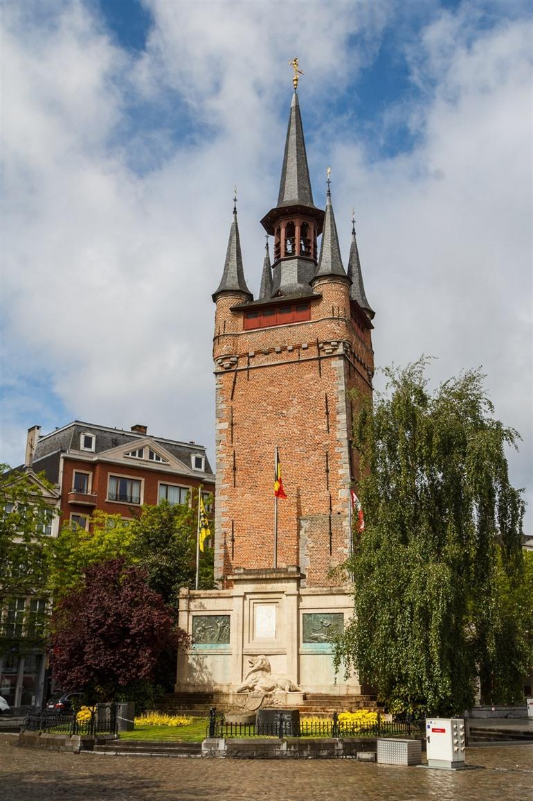

Sint-Elisabethbegijnhof
Het Begijnhof werd gesticht in 1238 en in 1240 rijkelijk gesteund door de Gravin van Vlaanderen, Johanna van Constantinopel. Je kunt haar standbeeld nog steeds terugvinden onder een boom op het gezellige binnenpleintje. Op de site staan in totaal een 40-tal huisjes die dateren uit 1650. Sinds 1984 begonnen grote restauratiewerken het begijnhof op te knappen. De laatste fases werden afgerond in 2019 en het resultaat mag er zijn. De rust op deze plek is onbeschrijfelijk, zeker als je weet dat je je op 100 meter van de Grote Markt bevindt. Het Begijnhof staat met al haar pracht op de Werelderfgoedlijst van Unesco.
Belfort van Kortrijk
Op de Grote Markt staat het Belfort. De geschiedenis van het Belfort gaat terug tot de 14e eeuw. Het Belfort is een overblijfsel van de middeleeuwse lakenhalle die hier vroeger plaatsvond en heeft 4 puntige torentjes, een beiaard van 48 klokken en behoort tot de Werelderfgoedlijst van Unesco.